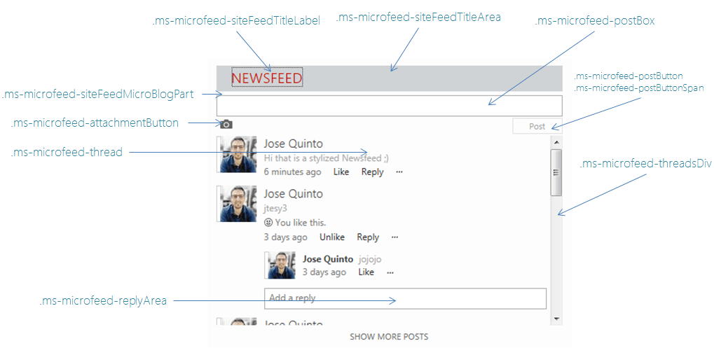

Introduction
A typical requirement in SharePoint 2013 intranets is the ability to customize styling of My Site Newsfeed or Site Feed Web Part. The MySite News Feed Web Part (also known as the MicroFeedWebPart) has roughly 181 related CSS classes in portal.css.
I’d like to share a custom CSS included in SharePoint master page in order to stylize Newsfeed Web Part. The main changes are:
- Custom header and title styles
- Change Newsfeed height and add scroll bar (Limit the height of Site Feed web part)
- Change margins and padding in order to have more compressed style
- Change width for all thread divs (newsfeed items) in order to maintain aspect when scroll bar is included
- Change Post Box height
- Change Add a reply width to avoid collapse with scroll bar.
These are the CSS classes modified:

Code
1 | /********* Newsfeed Styles **************/ |
UPDATE: If we add display: block; CSS property on .ms-microfeed-attachmentButton class. Then, when we click on “Start a conversation” we will maintain the height on the webpart. If we don’t have this css, then when focus on that textarea, the height will be increased and our global design can be affected negatively.
References
All articles in this blog are licensed under CC BY-SA 4.0 unless stating additionally.